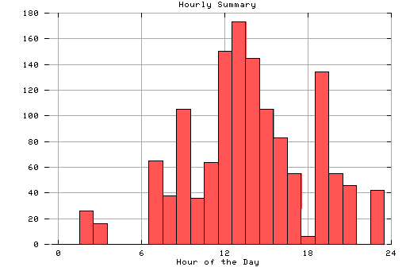

HTTP Server Hourly Summary
Covers: 10/16/95 to 10/19/95 (4 days).
All dates are in local time.
midnite: 0 : 1:00 am: 0 : 2:00 am: 26 : # 3:00 am: 16 : # 4:00 am: 0 : 5:00 am: 0 : 6:00 am: 0 : 7:00 am: 65 : ### 8:00 am: 38 : ## 9:00 am: 105 : ##### 10:00 am: 36 : ## 11:00 am: 64 : ### noon: 150 : ######## 1:00 pm: 173 : ######### 2:00 pm: 145 : ####### 3:00 pm: 105 : ##### 4:00 pm: 83 : #### 5:00 pm: 55 : ### 6:00 pm: 6 : 7:00 pm: 134 : ####### 8:00 pm: 55 : ### 9:00 pm: 46 : ## 10:00 pm: 0 : 11:00 pm: 42 : ##

Statistics generated at Fri Oct 20 01:00:35 MET 1995, (C) Oslonett AS, 1995.